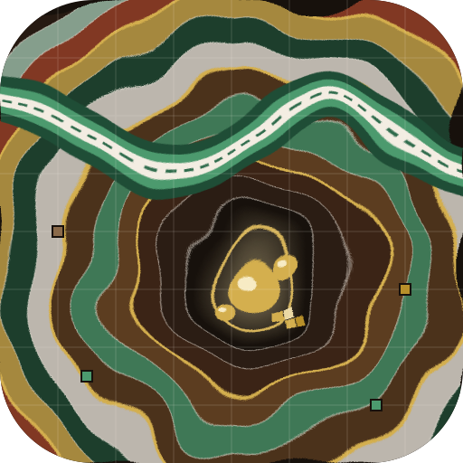
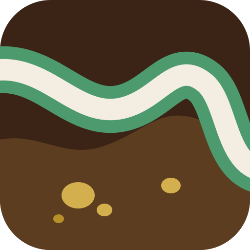
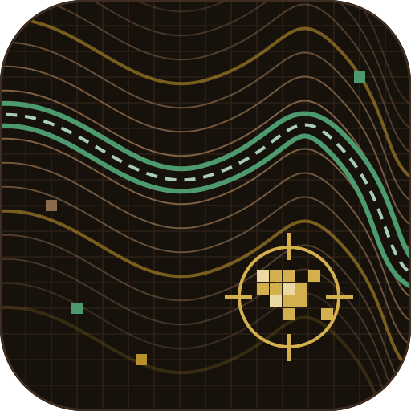
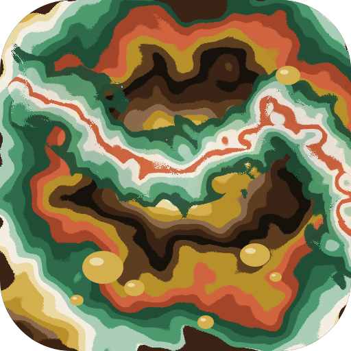

<title>Paydirt Brand Book</title>
<meta name="claude:viewport-fit-sides" content="cover">
<link rel="preconnect" href="https://fonts.googleapis.com">
<link rel="preconnect" href="https://fonts.gstatic.com" crossorigin>
<link rel="stylesheet" href="https://fonts.googleapis.com/css2?family=Inter+Tight:wght@500;600;700&family=Inter:wght@400;500;600&family=IBM+Plex+Mono:wght@400;500&display=swap">
<style>
/* Layout: a survey binder. Strata bands run full width; each section is a sheet with a plat-style label rail. */
:root {
  /* Ground — the brown everything is built on */
  --bedrock: #17110C; --loam: #2B1D14; --chocolate: #3B2416; --cacao: #5C3D20; --clay: #8A6A4A; --sand: #D8CDB8; --paper: #F3EDE2; --sheet: #FBF8F2;
  /* Canopy — the trees of the PNW */
  --fir: #1F4D36; --cedar: #2E6B4B; --moss: #4C9A6E; --lichen: #A9CDB6;
  /* Ore — the value we are building */
  --ore: #B8902A; --gilt: #D4AF4E; --pale-gold: #EBD9A4;
  /* Signal */
  --rust: #A4452A; --rust-soft: #D0643F;

  /* Theme roles (light) */
  --bg: var(--paper); --surface: var(--sheet); --raised: #FFFFFF; --line: #DCD2C2; --line-strong: #C3B59E;
  --fg: var(--loam); --fg-2: #6B5847; --fg-3: #8E7C69;
  --primary: var(--fir); --on-primary: var(--paper); --secondary: var(--ore); --on-secondary: var(--bedrock);
  --chrome: var(--chocolate); --on-chrome: var(--paper); --on-chrome-2: #CBB99F;
  --ok-bg: #DCE8DF; --ok-fg: #1F4D36; --warn-bg: #F1E4BF; --warn-fg: #6B4A0E; --bad-bg: #F2D9CF; --bad-fg: #7A2F1A; --tag-bg: #EADFCC; --tag-fg: #4A2E1C;
  --score-1: #D8CDB8; --score-2: #B8902A; --score-3: #2E7A50; --score-4: #1F4D36;

  --display: "Inter Tight", "Helvetica Neue", Arial, sans-serif;
  --body: "Inter", "Helvetica Neue", Arial, sans-serif;
  --mono: "IBM Plex Mono", ui-monospace, Menlo, monospace;
  --r: 4px;
  color-scheme: light;
}
@media (prefers-color-scheme: dark) { :root:not([data-theme="light"]) {
  --bg: var(--bedrock); --surface: #221811; --raised: #2D2016; --line: #3D2C1F; --line-strong: #56402C;
  --fg: #F1E9DA; --fg-2: #C2B29B; --fg-3: #9C8B76;
  --primary: var(--gilt); --on-primary: var(--bedrock); --secondary: var(--moss); --on-secondary: var(--bedrock);
  --chrome: #100B07; --on-chrome: #F1E9DA; --on-chrome-2: #A8967F;
  --ok-bg: #1E3A2B; --ok-fg: #9FD4B3; --warn-bg: #3E3015; --warn-fg: #E8C977; --bad-bg: #40201A; --bad-fg: #F0A68A; --tag-bg: #3A2818; --tag-fg: #E3C9A3;
  --score-1: #3D2C1F; --score-2: #8A6A2A; --score-3: #3E7E5A; --score-4: #6FBF8E;
  color-scheme: dark; } }
:root[data-theme="dark"] {
  --bg: var(--bedrock); --surface: #221811; --raised: #2D2016; --line: #3D2C1F; --line-strong: #56402C;
  --fg: #F1E9DA; --fg-2: #C2B29B; --fg-3: #9C8B76;
  --primary: var(--gilt); --on-primary: var(--bedrock); --secondary: var(--moss); --on-secondary: var(--bedrock);
  --chrome: #100B07; --on-chrome: #F1E9DA; --on-chrome-2: #A8967F;
  --ok-bg: #1E3A2B; --ok-fg: #9FD4B3; --warn-bg: #3E3015; --warn-fg: #E8C977; --bad-bg: #40201A; --bad-fg: #F0A68A; --tag-bg: #3A2818; --tag-fg: #E3C9A3;
  --score-1: #3D2C1F; --score-2: #8A6A2A; --score-3: #3E7E5A; --score-4: #6FBF8E;
  color-scheme: dark; }

* { box-sizing: border-box; }
body { background: var(--bg); color: var(--fg); font: 400 16px/1.6 var(--body); font-variant-numeric: tabular-nums; }
.wrap { max-width: 1120px; margin: 0 auto; padding-left: max(16px, env(safe-area-inset-left, 0px)); padding-right: max(16px, env(safe-area-inset-right, 0px)); }
h1, h2, h3 { font-family: var(--display); font-weight: 700; letter-spacing: -0.025em; line-height: 1.05; text-wrap: balance; margin: 0; }
h2 { font-size: clamp(28px, 4vw, 40px); }
h3 { font-size: 20px; letter-spacing: -0.015em; }
p { margin: 0; max-width: 65ch; }
.lbl { font-family: var(--mono); font-size: 11px; letter-spacing: 0.06em; text-transform: uppercase; color: var(--fg-3); }
.muted { color: var(--fg-2); }
a { color: inherit; }
:focus-visible { outline: 2px solid var(--secondary); outline-offset: 2px; }

/* Masthead: the strata band */
.mast { background: var(--chrome); color: var(--on-chrome); }
.mast .wrap { padding-block: 20px; display: flex; justify-content: space-between; align-items: center; gap: 16px; flex-wrap: wrap; }
.mast .lbl { color: var(--on-chrome-2); }
.theme-switch { display: flex; border: 1px solid #ffffff2e; border-radius: var(--r); overflow: hidden; }
.theme-switch button { font: 500 12px var(--mono); letter-spacing: 0.04em; text-transform: uppercase; background: transparent; color: var(--on-chrome-2); border: 0; padding: 7px 12px; cursor: pointer; }
.theme-switch button[aria-pressed="true"] { background: #ffffff1f; color: var(--on-chrome); }

.hero { background: var(--chrome); color: var(--on-chrome); position: relative; overflow: hidden; }
.hero .wrap { padding-block: 56px 72px; display: grid; grid-template-columns: minmax(0, 1.3fr) minmax(0, 1fr); gap: 40px; align-items: end; }
.hero h1 { font-size: clamp(56px, 11vw, 132px); letter-spacing: -0.045em; line-height: 0.9; }
.hero h1 span { color: var(--gilt); }
.hero .thesis { font: 500 clamp(20px, 2.4vw, 26px)/1.3 var(--display); letter-spacing: -0.01em; margin-top: 20px; max-width: 26ch; color: var(--on-chrome); }
.hero .meta { display: grid; gap: 14px; }
.hero .meta div { border-top: 1px solid #ffffff26; padding-top: 10px; }
.hero .meta .lbl { color: var(--on-chrome-2); }
.hero .meta p { color: var(--on-chrome); font-size: 15px; }
.strata { display: grid; grid-template-rows: 10px 4px 22px; }
.strata i:nth-child(1) { background: var(--fir); }
.strata i:nth-child(2) { background: var(--gilt); }
.strata i:nth-child(3) { background: var(--cacao); }
#contours { position: absolute; inset: 0; width: 100%; height: 100%; opacity: 0.22; pointer-events: none; }

section.sheet { padding-block: 72px; border-bottom: 1px solid var(--line); }
.sheet-head { display: grid; grid-template-columns: 180px minmax(0, 1fr); gap: 24px; margin-bottom: 36px; }
.sheet-head .lbl { padding-top: 10px; border-top: 2px solid var(--fg); align-self: start; color: var(--fg); }
.sheet-head p { margin-top: 14px; color: var(--fg-2); font-size: 18px; }
.body-col { margin-left: 204px; }

/* Meaning */
.meaning { display: grid; grid-template-columns: repeat(4, minmax(0, 1fr)); gap: 16px; }
.meaning .cut { background: var(--rust); color: var(--paper); }
@media (max-width: 1060px) { .meaning { grid-template-columns: repeat(2, minmax(0, 1fr)); } }
.meaning article { border-radius: var(--r); padding: 22px; min-height: 230px; display: flex; flex-direction: column; justify-content: space-between; gap: 24px; }
.meaning .ground { background: var(--chocolate); color: var(--paper); }
.meaning .canopy { background: var(--fir); color: var(--paper); }
.meaning .ore { background: var(--ore); color: var(--bedrock); }
.meaning h3 { font-size: 30px; }
.meaning p { font-size: 15px; opacity: 0.92; }
.meaning .lbl { color: inherit; opacity: 0.75; }

/* Audience */
.aud { display: grid; grid-template-columns: repeat(2, minmax(0, 1fr)); gap: 16px; }
.aud article { background: var(--surface); border: 1px solid var(--line); border-radius: var(--r); padding: 22px; display: grid; gap: 12px; align-content: start; }
.aud ul { margin: 0; padding-left: 18px; color: var(--fg-2); display: grid; gap: 6px; font-size: 15px; }
.traits { display: grid; grid-template-columns: repeat(4, minmax(0, 1fr)); gap: 16px; margin-top: 16px; }
.traits div { border-top: 2px solid var(--secondary); padding-top: 10px; }
.traits b { font: 700 18px var(--display); letter-spacing: -0.01em; display: block; }
.traits span { font-size: 14px; color: var(--fg-2); }

/* Palette */
.ramp { display: grid; grid-template-columns: 150px minmax(0, 1fr); gap: 20px; padding-block: 18px; border-top: 1px solid var(--line); }
.ramp:first-of-type { border-top: 0; }
.ramp h3 { font-size: 18px; }
.ramp .lbl { display: block; margin-top: 6px; }
.chips { display: grid; grid-template-columns: repeat(auto-fill, minmax(118px, 1fr)); gap: 10px; }
.chip { border-radius: var(--r); overflow: hidden; border: 1px solid var(--line); background: var(--surface); }
.chip i { display: block; height: 64px; }
.chip div { padding: 8px 10px; display: grid; gap: 1px; }
.chip b { font: 600 13px var(--display); }
.chip code { font: 400 11px var(--mono); color: var(--fg-3); }
.chip span { font-size: 12px; color: var(--fg-2); line-height: 1.35; }
.proportion { display: flex; height: 44px; border-radius: var(--r); overflow: hidden; margin-top: 22px; }
.proportion div { display: flex; align-items: center; padding: 0 12px; font: 500 11px var(--mono); letter-spacing: 0.04em; text-transform: uppercase; white-space: nowrap; overflow: hidden; }
.score-ramp { display: grid; grid-template-columns: repeat(4, minmax(0, 1fr)); gap: 4px; margin-top: 12px; }
.score-ramp div { height: 36px; border-radius: 3px; display: flex; align-items: flex-end; padding: 4px 8px; font: 500 11px var(--mono); }

/* Type */
.type-grid { display: grid; grid-template-columns: repeat(3, minmax(0, 1fr)); gap: 16px; }
.type-grid article { background: var(--surface); border: 1px solid var(--line); border-radius: var(--r); padding: 22px; display: grid; gap: 12px; align-content: start; }
.specimen-d { font: 700 64px/0.95 var(--display); letter-spacing: -0.04em; }
.specimen-b { font: 400 30px/1.1 var(--body); }
.specimen-m { font: 500 26px/1.1 var(--mono); letter-spacing: -0.01em; }
.scale { margin-top: 20px; display: grid; gap: 10px; }
.scale div { display: grid; grid-template-columns: 120px minmax(0, 1fr); gap: 16px; align-items: baseline; border-top: 1px solid var(--line); padding-top: 10px; }
.scale .ex { overflow-wrap: anywhere; }

/* Mark */
.marks { display: grid; grid-template-columns: repeat(3, minmax(0, 1fr)); gap: 16px; }
.marks figure { margin: 0; border-radius: var(--r); padding: 28px; display: grid; place-items: center; min-height: 210px; gap: 14px; }
.marks figcaption { font-size: 13px; text-align: center; }
.m-light { background: var(--sheet); border: 1px solid var(--line); color: var(--loam); }
.m-choc { background: var(--chocolate); color: var(--paper); }
.m-dark { background: var(--bedrock); color: #F1E9DA; border: 1px solid #3D2C1F; }
.wordmark { display: flex; align-items: center; gap: 12px; font: 700 34px var(--display); letter-spacing: -0.035em; }
.rules { display: grid; grid-template-columns: repeat(3, minmax(0, 1fr)); gap: 16px; margin-top: 16px; font-size: 14px; color: var(--fg-2); }
.rules div { border-top: 1px solid var(--line); padding-top: 10px; }

.goldfield { display: grid; grid-template-columns: auto minmax(0, 1fr); gap: 32px; align-items: center; background: var(--surface); border: 1px solid var(--line); border-radius: var(--r); padding: 28px; }
.goldfield > img { width: 280px; height: 280px; max-width: 100%; }
.gf-text { display: grid; gap: 12px; }
.gf-text .sizes { display: flex; gap: 16px; align-items: flex-end; padding-top: 12px; border-top: 1px solid var(--line); }
@media (max-width: 820px) { .goldfield { grid-template-columns: 1fr; justify-items: center; } }
.icons { display: grid; grid-template-columns: repeat(3, minmax(0, 1fr)); gap: 16px; }
.icons figure { margin: 0; background: var(--surface); border: 1px solid var(--line); border-radius: var(--r); padding: 22px; display: grid; gap: 14px; justify-items: center; align-content: start; }
.icons figure > img { width: 168px; height: 168px; max-width: 100%; }
.icons figcaption { display: grid; gap: 6px; text-align: center; }
.icons figcaption b { font: 700 18px var(--display); letter-spacing: -0.015em; }
.icons figcaption span { font-size: 14px; color: var(--fg-2); }
.icons .sizes { display: flex; gap: 14px; align-items: flex-end; padding-top: 10px; border-top: 1px solid var(--line); width: 100%; justify-content: center; }
@media (max-width: 820px) { .icons { grid-template-columns: 1fr; } }
/* Voice */
.voice { display: grid; grid-template-columns: repeat(2, minmax(0, 1fr)); gap: 16px; }
.voice article { border-radius: var(--r); padding: 20px; display: grid; gap: 12px; align-content: start; background: var(--surface); border: 1px solid var(--line); }
.voice .say { border-top: 3px solid var(--moss); }
.voice .skip { border-top: 3px solid var(--rust-soft); }
.voice ul { list-style: none; margin: 0; padding: 0; display: grid; gap: 10px; }
.voice li { font-size: 15px; padding-left: 0; }
.voice li small { display: block; color: var(--fg-3); font-size: 12.5px; }
.lexicon { margin-top: 16px; display: flex; flex-wrap: wrap; gap: 8px; }
.lexicon span { font: 500 12px var(--mono); padding: 4px 9px; border-radius: 3px; background: var(--tag-bg); color: var(--tag-fg); }

/* Components */
.comp-grid { display: grid; grid-template-columns: repeat(2, minmax(0, 1fr)); gap: 16px; }
.comp { background: var(--surface); border: 1px solid var(--line); border-radius: var(--r); padding: 20px; display: grid; gap: 14px; align-content: start; }
.row { display: flex; flex-wrap: wrap; gap: 10px; align-items: center; }
.btn { font: 700 14px var(--display); letter-spacing: -0.005em; border-radius: var(--r); padding: 10px 16px; border: 1px solid transparent; cursor: pointer; transition: transform 80ms ease-out, background 120ms; display: inline-flex; gap: 8px; align-items: center; }
.btn:active { transform: rotate(-0.75deg) scale(0.985); }
.btn-primary { background: var(--primary); color: var(--on-primary); }
.btn-secondary { background: transparent; color: var(--fg); border-color: var(--line-strong); }
.btn-ore { background: var(--ore); color: var(--bedrock); }
.btn .cost { font: 500 11px var(--mono); padding: 2px 6px; border-radius: 3px; background: #0000001f; }
.btn-secondary .cost { background: var(--tag-bg); color: var(--tag-fg); }
.pill { font: 600 12px var(--body); padding: 2px 9px; border-radius: 3px; }
.p-ok { background: var(--ok-bg); color: var(--ok-fg); } .p-warn { background: var(--warn-bg); color: var(--warn-fg); } .p-bad { background: var(--bad-bg); color: var(--bad-fg); } .p-tag { background: var(--tag-bg); color: var(--tag-fg); }
.score { font: 700 14px var(--display); min-width: 34px; text-align: center; padding: 3px 8px; border-radius: 3px; }
.s4 { background: var(--score-4); color: var(--paper); } .s3 { background: var(--score-3); color: var(--paper); } .s2 { background: var(--score-2); color: var(--bedrock); } .s1 { background: var(--score-1); color: var(--fg); }
:root[data-theme="dark"] .s4 { color: var(--bedrock); }
@media (prefers-color-scheme: dark) { :root:not([data-theme="light"]) .s4 { color: var(--bedrock); } }
.catch { background: var(--bad-bg); color: var(--bad-fg); border-radius: var(--r); padding: 10px 12px; display: grid; gap: 4px; }
.catch p { font-size: 14px; font-weight: 500; }
.field { display: grid; gap: 6px; }
.field input { font: 500 15px var(--body); color: var(--fg); background: var(--raised); border: 1px solid var(--line-strong); border-radius: var(--r); padding: 9px 11px; }
.kv { display: grid; grid-template-columns: auto 1fr; gap: 6px 16px; font-size: 14px; margin: 0; }
.kv dt { color: var(--fg-3); font: 400 12px var(--mono); letter-spacing: 0.03em; text-transform: uppercase; padding-top: 2px; }
.kv dd { margin: 0; font-weight: 500; }
.wallet { display: grid; gap: 10px; }
.wallet .bal { font: 700 40px/1 var(--display); letter-spacing: -0.03em; }
.meter { height: 8px; border-radius: 4px; background: var(--line); overflow: hidden; }
.meter i { display: block; height: 100%; width: 62%; background: linear-gradient(90deg, var(--ore), var(--gilt)); }
.ledger { width: 100%; border-collapse: collapse; font-size: 13px; }
.ledger td { padding: 7px 0; border-top: 1px solid var(--line); }
.ledger td:last-child { text-align: right; font-family: var(--mono); }

/* Screens */
.screen { border-radius: 8px; overflow: hidden; border: 1px solid var(--line-strong); background: var(--bg); }
.scr-top { background: var(--chrome); color: var(--on-chrome); display: flex; justify-content: space-between; align-items: center; padding: 10px 16px; gap: 12px; flex-wrap: wrap; }
.scr-top .wm { display: flex; align-items: center; gap: 8px; font: 700 18px var(--display); letter-spacing: -0.03em; }
.scr-top .lbl { color: var(--on-chrome-2); }
.scr-top .credits { font: 500 12px var(--mono); background: #ffffff14; padding: 4px 10px; border-radius: 3px; color: var(--gilt); }
.scr-body { display: grid; grid-template-columns: 300px minmax(0, 1fr) 300px; min-height: 520px; }
.scr-list { border-right: 1px solid var(--line); padding: 14px; display: grid; gap: 10px; align-content: start; background: var(--surface); }
.prow { border: 1px solid var(--line); border-radius: var(--r); padding: 10px 12px; display: grid; grid-template-columns: minmax(0, 1fr) auto; gap: 3px 10px; background: var(--raised); }
.prow.sel { border-color: var(--primary); box-shadow: inset 3px 0 0 var(--primary); }
.prow b { font: 600 14px var(--display); overflow: hidden; text-overflow: ellipsis; white-space: nowrap; }
.prow small { grid-column: 1 / -1; color: var(--fg-2); font-size: 12px; }
.prow .tags { grid-column: 1 / -1; display: flex; gap: 5px; flex-wrap: wrap; margin-top: 4px; }
.prow .tags .pill { font-size: 11px; }
.scr-map { position: relative; background: var(--bg); overflow: hidden; min-height: 320px; }
.scr-map canvas { position: absolute; inset: 0; width: 100%; height: 100%; }
.legend { position: absolute; left: 12px; bottom: 12px; background: var(--raised); border: 1px solid var(--line); border-radius: var(--r); padding: 8px 10px; display: grid; gap: 6px; font-size: 12px; }
.legend .bar { height: 6px; width: 140px; border-radius: 3px; background: linear-gradient(90deg, var(--score-1), var(--score-2), var(--score-3), var(--score-4)); }
.scr-panel { border-left: 1px solid var(--line); padding: 16px; display: grid; gap: 14px; align-content: start; background: var(--surface); }
.scr-panel h3 { font-size: 18px; }
.bars { display: grid; grid-template-columns: minmax(0, 1fr) 90px 24px; gap: 6px 10px; align-items: center; font-size: 12px; }
.bars .t { height: 6px; border-radius: 3px; background: var(--line); overflow: hidden; }
.bars .t i { display: block; height: 100%; background: var(--secondary); }
:root[data-theme="dark"] .bars .t i { background: var(--moss); }

/* Site brief one-pager */
.brief { display: grid; grid-template-columns: minmax(0, 1fr) minmax(0, 1fr); background: var(--sheet); color: var(--loam); border-radius: 6px; overflow: hidden; border: 1px solid var(--line); }
.brief .left { background: var(--chocolate); color: var(--paper); padding: 28px; display: grid; gap: 18px; align-content: space-between; min-height: 420px; position: relative; overflow: hidden; }
.brief .left .lbl { color: #CBB99F; }
.brief .left h3 { font-size: 34px; letter-spacing: -0.03em; }
.brief .right { padding: 28px; display: grid; gap: 16px; align-content: start; }
.brief .right .lbl { color: #8E7C69; }
.brief .stat { display: grid; grid-template-columns: repeat(3, minmax(0, 1fr)); gap: 10px; }
.brief .stat div { border-top: 2px solid var(--ore); padding-top: 8px; }
.brief .stat b { font: 700 24px var(--display); letter-spacing: -0.02em; display: block; }
.brief .stat span { font-size: 12px; color: #6B5847; }
.brief .kv dt { color: #8E7C69; }

.next { display: grid; grid-template-columns: repeat(3, minmax(0, 1fr)); gap: 16px; }
.next article { border-top: 2px solid var(--fg); padding-top: 12px; display: grid; gap: 8px; align-content: start; }
.next p { font-size: 15px; color: var(--fg-2); }
footer { padding-block: 32px 48px; }
footer .wrap { display: flex; justify-content: space-between; gap: 16px; flex-wrap: wrap; }

@media (max-width: 980px) {
  .scr-body { grid-template-columns: 1fr; }
  .scr-list, .scr-panel { border: 0; }
  .scr-map { min-height: 280px; }
}
@media (max-width: 820px) {
  .hero .wrap, .sheet-head { grid-template-columns: 1fr; }
  .body-col { margin-left: 0; }
  .meaning, .aud, .type-grid, .marks, .voice, .comp-grid, .next, .rules, .brief { grid-template-columns: 1fr; }
  .traits { grid-template-columns: repeat(2, minmax(0, 1fr)); }
  .ramp { grid-template-columns: 1fr; }
}
@media (prefers-reduced-motion: reduce) { .btn { transition: none; } .btn:active { transform: none; } }
</style>

<header class="mast">
  <div class="wrap">
    <div style="display:flex;align-items:center;gap:12px">
      <svg width="28" height="28" viewBox="0 0 32 32" aria-hidden="true"><rect width="32" height="32" rx="4" fill="#3B2416"/><path d="M4 21c5-3 9 2 14-1s8-2 10 0" fill="none" stroke="#8A6A4A" stroke-width="1.4"/><path d="M4 25c5-3 9 2 14-1s8-2 10 0" fill="none" stroke="#8A6A4A" stroke-width="1.4"/><path d="M3 17.5h26" stroke="#D4AF4E" stroke-width="2"/><path d="M16 4l6 10H10z" fill="#4C9A6E"/></svg>
      <span class="lbl">Paydirt · brand proposal · v1 · Nov 2026</span>
    </div>
    <div class="theme-switch" role="group" aria-label="Preview theme">
      <button type="button" id="tAuto" aria-pressed="true">System</button>
      <button type="button" id="tLight" aria-pressed="false">Light</button>
      <button type="button" id="tDark" aria-pressed="false">Dark</button>
    </div>
  </div>
</header>

<section class="hero">
  <canvas id="contours" aria-hidden="true"></canvas>
  <div class="wrap" style="position:relative">
    <div>
      <span class="lbl" style="color:var(--on-chrome-2)">For commercial real estate and the buyers it serves</span>
      <h1 style="margin-top:14px">Pay<span>dirt</span></h1>
      <p class="thesis">Find the ground worth building on, before anyone lists it.</p>
    </div>
    <div class="meta">
      <div><span class="lbl">What it is</span><p>A land-sourcing tool that reads zoning, ownership, terrain and the people nearby for every parcel in a county, then ranks the sites that fit a buyer's project.</p></div>
      <div><span class="lbl">Who it's for</span><p>Brokers, developers and acquisition teams, and operators buying for their own use.</p></div>
      <div><span class="lbl">First market</span><p>King County, WA. 21,025 parcels of 5+ acres, scored.</p></div>
    </div>
  </div>
  <div class="strata" aria-hidden="true"><i></i><i></i><i></i></div>
</section>

<main>
<section class="sheet" id="meaning"><div class="wrap">
  <div class="sheet-head"><span class="lbl">01 · Meaning</span><div><h2>Four colors, four jobs</h2><p>The palette is the product's argument in miniature: the ground under every deal, the place that makes it worth owning, the value a good site turns into, and the red tape we cut on the way there.</p></div></div>
  <div class="meaning">
    <article class="ground"><span class="lbl">Ground · brown</span><div><h3>Everything is built on it</h3><p style="margin-top:10px">Deep chocolate with gold worked into it. Brown carries structure: the app frame, headers, the one-pager cover. It's the most-used color, used in large calm fields.</p></div></article>
    <article class="canopy"><span class="lbl">Canopy · green</span><div><h3>The trees of the PNW</h3><p style="margin-top:10px">Fir and cedar greens say where we are and what grows here. Green means fit: high scores, permitted zoning, the primary action in light mode.</p></div></article>
    <article class="ore"><span class="lbl">Ore · gold</span><div><h3>The value we're building</h3><p style="margin-top:10px">Gold is earned, so it's used sparingly: the seam in the mark, credits, the top of a strong score, and the primary action in dark mode.</p></div></article>
    <article class="cut"><span class="lbl">Cut · red</span><div><h3>Through the red tape</h3><p style="margin-top:10px">CRE hides the catch in code sections and permit paths. Red names it plainly: the conditional use permit, the deal-breaker, the rule that changes the math. Used only where there's a real obstacle to clear.</p></div></article>
  </div>
</div></section>

<section class="sheet" id="audience"><div class="wrap">
  <div class="sheet-head"><span class="lbl">02 · Audience</span><div><h2>Built for people who read parcels for a living</h2><p>Commercial real estate is a trust business. The brand should feel like a sharp land surveyor's report: exact, calm, and obviously worth paying for.</p></div></div>
  <div class="aud body-col">
    <article><span class="lbl">CRE professionals</span><h3>Brokers, developers, acquisition teams</h3><ul><li>Need to scan a county fast and defend a shortlist to a client or an investment committee.</li><li>Speak in APNs, acres, zoning codes and comps. Expect the source behind every number.</li><li>Value off-market leads: long holds, inherited land, absentee owners.</li></ul></article>
    <article><span class="lbl">Buyers</span><h3>Operators buying for their own use</h3><ul><li>Field House, schools, churches, clubs, light industrial users.</li><li>Know what they need to build, not how land is zoned. Need it translated.</li><li>Want to know where to look, what it costs, and whether they can build there.</li></ul></article>
  </div>
  <div class="traits body-col">
    <div><b>Grounded</b><span>Facts before adjectives. Every claim has a source.</span></div>
    <div><b>Local-deep</b><span>Knows the code section, the township, the parcel's history.</span></div>
    <div><b>Quietly valuable</b><span>Gold shows up where money does, nowhere else.</span></div>
    <div><b>On your side</b><span>Plain words for buyers, shorthand for pros.</span></div>
  </div>
</div></section>

<section class="sheet" id="color"><div class="wrap">
  <div class="sheet-head"><span class="lbl">03 · Color</span><div><h2>Palette</h2><p>Four families. Brown leads, green supports, gold accents, red cuts. The neutrals are browns too, so there's no grey anywhere in the product. Red is the color of a surveyor's flag: small, exact, impossible to miss.</p></div></div>
  <div class="body-col">
    <div class="ramp"><div><h3>Ground</h3><span class="lbl">Structure · 60%</span></div><div class="chips">
      <div class="chip"><i style="background:#17110C"></i><div><b>Bedrock</b><code>#17110C</code><span>Dark theme ground</span></div></div>
      <div class="chip"><i style="background:#2B1D14"></i><div><b>Loam</b><code>#2B1D14</code><span>Text on light</span></div></div>
      <div class="chip"><i style="background:#3B2416"></i><div><b>Chocolate</b><code>#3B2416</code><span>App frame, covers</span></div></div>
      <div class="chip"><i style="background:#5C3D20"></i><div><b>Cacao gold</b><code>#5C3D20</code><span>Chocolate with gold in it</span></div></div>
      <div class="chip"><i style="background:#8A6A4A"></i><div><b>Clay</b><code>#8A6A4A</code><span>Contours, rules</span></div></div>
      <div class="chip"><i style="background:#D8CDB8"></i><div><b>Sand</b><code>#D8CDB8</code><span>Lines, low scores</span></div></div>
      <div class="chip"><i style="background:#F3EDE2"></i><div><b>Paper</b><code>#F3EDE2</code><span>Light theme ground</span></div></div>
    </div></div>
    <div class="ramp"><div><h3>Canopy</h3><span class="lbl">Fit and place · 25%</span></div><div class="chips">
      <div class="chip"><i style="background:#1F4D36"></i><div><b>Fir</b><code>#1F4D36</code><span>Primary action (light)</span></div></div>
      <div class="chip"><i style="background:#2E6B4B"></i><div><b>Cedar</b><code>#2E6B4B</code><span>Strong scores</span></div></div>
      <div class="chip"><i style="background:#4C9A6E"></i><div><b>Moss</b><code>#4C9A6E</code><span>Green on dark</span></div></div>
      <div class="chip"><i style="background:#A9CDB6"></i><div><b>Lichen</b><code>#A9CDB6</code><span>Tints, map parks</span></div></div>
    </div></div>
    <div class="ramp"><div><h3>Ore</h3><span class="lbl">Value · 10%</span></div><div class="chips">
      <div class="chip"><i style="background:#B8902A"></i><div><b>Ore</b><code>#B8902A</code><span>Credits, mid scores</span></div></div>
      <div class="chip"><i style="background:#D4AF4E"></i><div><b>Gilt</b><code>#D4AF4E</code><span>Primary action (dark)</span></div></div>
      <div class="chip"><i style="background:#EBD9A4"></i><div><b>Pale gold</b><code>#EBD9A4</code><span>Highlights</span></div></div>
    </div></div>
    <div class="ramp"><div><h3>Cut</h3><span class="lbl">Red tape, named · 5%</span></div><div class="chips">
      <div class="chip"><i style="background:#A4452A"></i><div><b>Survey red</b><code>#A4452A</code><span>The catch: permits, deal-breakers</span></div></div>
      <div class="chip"><i style="background:#D0643F"></i><div><b>Flag red</b><code>#D0643F</code><span>Same role on dark</span></div></div>
      <div class="chip"><i style="background:#F2D9CF"></i><div><b>Red tint</b><code>#F2D9CF</code><span>Behind permit notes</span></div></div>
    </div></div>
    <div class="proportion" aria-label="Color proportions">
      <div style="flex:60;background:var(--chocolate);color:var(--paper)">Ground 60</div>
      <div style="flex:25;background:var(--fir);color:var(--paper)">Canopy 25</div>
      <div style="flex:10;background:var(--ore);color:var(--bedrock)">Ore 10</div>
      <div style="flex:5;background:var(--rust);color:var(--paper)">Cut 5</div>
    </div>
    <p class="muted" style="margin-top:22px;font-size:15px">Scores run from sand through ore to fir: low-fit land reads as bare ground, good land turns gold, the best turns green.</p>
    <div class="score-ramp"><div class="s1">0–44</div><div class="s2">45–59</div><div class="s3">60–74</div><div class="s4">75–100</div></div>
  </div>
</div></section>

<section class="sheet" id="type"><div class="wrap">
  <div class="sheet-head"><span class="lbl">04 · Type</span><div><h2>Three voices, one family feel</h2><p>From PerFin, toned down: the same tight grotesk for headlines, at 700 instead of 900, with looser tracking. Plex Mono keeps the surveyor's labels.</p></div></div>
  <div class="type-grid">
    <article><span class="lbl">Display · Inter Tight 700</span><div class="specimen-d">15.8 acres</div><p class="muted" style="font-size:14px">Headlines, scores, the wordmark. Tracking −0.025em, never below 18px.</p></article>
    <article><span class="lbl">Body · Inter 400 / 500</span><div class="specimen-b">Held 28 years, inherited in 2009.</div><p class="muted" style="font-size:14px">Everything people read in sentences. 15–16px in the app, 1.5–1.6 line height.</p></article>
    <article><span class="lbl">Data · IBM Plex Mono 500</span><div class="specimen-m">APN 182507-9027</div><p class="muted" style="font-size:14px">Labels, parcel numbers, code sections, credit costs. Uppercase only at 11–12px.</p></article>
  </div>
  <div class="scale body-col">
    <div><span class="lbl">Hero 72–132</span><span class="ex" style="font:700 56px/1 var(--display);letter-spacing:-0.04em">Paydirt</span></div>
    <div><span class="lbl">Title 32–40</span><span class="ex" style="font:700 34px/1.1 var(--display);letter-spacing:-0.025em">Ames Lake–Carnation Rd</span></div>
    <div><span class="lbl">Heading 20</span><span class="ex" style="font:700 20px var(--display);letter-spacing:-0.015em">Zoning for a sports facility</span></div>
    <div><span class="lbl">Body 16</span><span class="ex">Conditional use permit; building up to 10,000 sq ft unless next to a public facility.</span></div>
    <div><span class="lbl">Label 11</span><span class="ex lbl" style="color:var(--fg)">SE ¼ Sec. 18, T25N, R7E · KCC 21A.08.050</span></div>
  </div>
</div></section>

<section class="sheet" id="mark"><div class="wrap">
  <div class="sheet-head"><span class="lbl">05 · Mark</span><div><h2>A core sample</h2><p>The mark is a cross-section of a good site: a fir on top, a seam of gold at grade, contour lines in the ground below. It reads at 16px and holds up on chocolate, paper and bedrock.</p></div></div>
  <div class="marks">
    <figure class="m-light"><div class="wordmark"><svg width="44" height="44" viewBox="0 0 32 32" aria-hidden="true"><rect width="32" height="32" rx="4" fill="#3B2416"/><path d="M4 21c5-3 9 2 14-1s8-2 10 0" fill="none" stroke="#8A6A4A" stroke-width="1.4"/><path d="M4 25c5-3 9 2 14-1s8-2 10 0" fill="none" stroke="#8A6A4A" stroke-width="1.4"/><path d="M3 17.5h26" stroke="#D4AF4E" stroke-width="2"/><path d="M16 4l6 10H10z" fill="#4C9A6E"/></svg>Paydirt</div><figcaption style="color:#6B5847">Primary, on paper</figcaption></figure>
    <figure class="m-choc"><div class="wordmark">Pay<span style="color:#D4AF4E">dirt</span></div><figcaption style="color:#CBB99F">Wordmark on chocolate, gold on “dirt”</figcaption></figure>
    <figure class="m-dark"><div class="wordmark"><svg width="44" height="44" viewBox="0 0 32 32" aria-hidden="true"><rect width="32" height="32" rx="4" fill="#2D2016"/><path d="M4 21c5-3 9 2 14-1s8-2 10 0" fill="none" stroke="#8A6A4A" stroke-width="1.4"/><path d="M4 25c5-3 9 2 14-1s8-2 10 0" fill="none" stroke="#8A6A4A" stroke-width="1.4"/><path d="M3 17.5h26" stroke="#D4AF4E" stroke-width="2"/><path d="M16 4l6 10H10z" fill="#6FBF8E"/></svg>Paydirt</div><figcaption style="color:#A8967F">On bedrock, lifted tile</figcaption></figure>
  </div>
  <div class="rules body-col">
    <div>Gold appears once per mark, at the seam or on “dirt”. Never both. Red never appears in the mark: it belongs to the catch, not the brand name.</div>
    <div>Clear space equals the height of the fir. Minimum size 16px.</div>
    <div>Don't recolor the layers, add gradients, or set the wordmark in another face.</div>
  </div>
</div></section>

<section class="sheet" id="icon"><div class="wrap">
  <div class="sheet-head"><span class="lbl">05b · App icon</span><div><h2>Gold in the dirt</h2><p>One lead icon and three earlier directions, all from one idea: a found label that reads as an aerial map, with rivers through red earth and gold-foil nuggets. Here the land is brown, the rivers run paper with a canopy-green edge, and the nuggets are ore.</p></div></div>
  <div class="goldfield">
    
    <div class="gf-text">
      <span class="lbl">Lead direction · Goldfield</span>
      <h3>The search, in one picture</h3>
      <p>Out there's melted strata, Digital's contour lines, and no crosshair. The colors cycle wild at the edges, then sink into dark ground, and the contour lines tighten like a summit on a topo map around what we're digging for: gold.</p>
      <p class="muted" style="font-size:14px">Bands, lines and nuggets are warped together, so every contour follows the melt exactly. Use it for the app icon at 64px and up, the site, and print. Under 32px, switch to Simple.</p>
      <div class="sizes"></div>
    </div>
  </div>
  <p class="lbl" style="margin:28px 0 12px">Earlier directions</p>
  <div class="icons">
    <figure><figcaption><b>Simple</b><span>One river, two grounds, four nuggets. Flat shapes that hold up at 16px. The everyday app icon.</span></figcaption><div class="sizes"></div></figure>
    <figure><figcaption><b>Digital</b><span>The same map as a GIS screen: survey grid, contour bands, the river as a vector, a pixel nugget under the crosshair. For the dark theme and the product site.</span></figcaption><div class="sizes"></div></figure>
    <figure><figcaption><b>Out there</b><span>What the map looks like to Jerry Garcia at a Shoreline show: every brand color melting through the strata, the river running red-hot, gold dripping out of the ground. Merch, stickers, the launch poster.</span></figcaption><div class="sizes"></div></figure>
  </div>
  <p class="muted body-col" style="margin-top:18px;font-size:14px">Recommendation: Goldfield as the app icon and on the site; Simple wherever it has to work at 16px (browser tab, favicon). Every version keeps the core-sample logic: green on top, gold in the ground.</p>
</div></section>

<section class="sheet" id="voice"><div class="wrap">
  <div class="sheet-head"><span class="lbl">06 · Voice</span><div><h2>Talk like a good land broker</h2><p>Lead with the number, name the source, say what it means. Use the trade's shorthand where pros expect it, and translate it for buyers.</p></div></div>
  <div class="voice">
    <article class="say"><span class="lbl">Say</span><ul>
      <li>15.8 acres, RA-5. A sports club needs a conditional use permit here.<small>Number first, then what it means.</small></li>
      <li>Held 28 years. Inherited in 2009. Tax bill goes to Alaska.<small>Signals stated as facts, no hype.</small></li>
      <li>Check slope and wetlands · 1 credit<small>The cost is on the button.</small></li>
      <li>Source: King County Code 21A.08.050, updated Sep 9, 2026.<small>Every verdict names where it came from.</small></li>
      <li>The catch: field lights need their own permit in RA zones.<small>Name the red tape in one line, in red.</small></li>
    </ul></article>
    <article class="skip"><span class="lbl">Skip</span><ul>
      <li>Unlock hidden gems with AI-powered insights!<small>Hype, and it hides the source.</small></li>
      <li>This owner is ready to sell.<small>We don't know that. Say what the records show.</small></li>
      <li>Premium analysis available<small>Name the action and its cost.</small></li>
      <li>Oops! Something went wrong.<small>Say what failed and what to do next.</small></li>
    </ul></article>
  </div>
  <div class="lexicon body-col"><span>APN</span><span>acres</span><span>zoning</span><span>permitted / conditional</span><span>off-market</span><span>held 20+ years</span><span>absentee owner</span><span>assessed value / ac</span><span>comps</span><span>site brief</span><span>shortlist</span><span>credits</span></div>
</div></section>

<section class="sheet" id="components"><div class="wrap">
  <div class="sheet-head"><span class="lbl">07 · Components</span><div><h2>The pieces</h2><p>Square-cornered blocks with a 4px radius. Buttons tip three-quarters of a degree when pressed, half of PerFin's tilt. Flat color only where it carries meaning.</p></div></div>
  <div class="comp-grid">
    <div class="comp"><span class="lbl">Actions</span>
      <div class="row"><button class="btn btn-primary" type="button">Create project</button><button class="btn btn-secondary" type="button">Check slope <span class="cost">1 credit</span></button></div>
      <div class="row"><button class="btn btn-ore" type="button">Unlock Snohomish County <span class="cost">40 credits</span></button></div>
      <p class="muted" style="font-size:13px">One primary per view. Paid actions always show their cost in Plex Mono.</p>
    </div>
    <div class="comp"><span class="lbl">Status</span>
      <div class="row"><span class="score s4">84</span><span class="score s3">71</span><span class="score s2">52</span><span class="score s1">31</span></div>
      <div class="row"><span class="pill p-ok">Permitted</span><span class="pill p-warn">Conditional</span><span class="pill p-bad">Not allowed</span><span class="pill p-tag">Inherited</span><span class="pill p-tag">Held 28y</span></div>
      <div class="catch"><span class="lbl" style="color:var(--bad-fg)">The catch</span><p>Conditional use permit required. Building capped at 10,000 sq ft unless next to a public facility. KCC 21A.08.050 B.3</p></div>
    </div>
    <div class="comp"><span class="lbl">Parcel facts</span>
      <dl class="kv"><dt>APN</dt><dd>182507-9027</dd><dt>Zone</dt><dd>RA-5 · King County</dd><dt>Acres</dt><dd>15.8</dd><dt>Land value</dt><dd>$412,000 ($26,076/ac)</dd><dt>Last sale</dt><dd>1998 · $123,500</dd></dl>
    </div>
    <div class="comp"><span class="lbl">Credits</span>
      <div class="wallet"><div style="display:flex;justify-content:space-between;align-items:baseline"><span class="bal">124</span><span class="muted" style="font-size:13px">of 200 this month</span></div><div class="meter"><i></i></div>
      <table class="ledger"><tr><td>Brief draft · Field House</td><td>−1</td></tr><tr><td>Slope check · 182507-9027</td><td>−1</td></tr><tr><td>Monthly allowance</td><td>+200</td></tr></table></div>
    </div>
    <div class="comp" style="grid-column:1 / -1"><span class="lbl">Inputs</span>
      <div class="row" style="align-items:end"><label class="field" for="fAcres"><span class="lbl">Target acres</span><input id="fAcres" value="13 – 40"></label><label class="field" for="fArea"><span class="lbl">Places</span><input id="fArea" value="Duvall, Carnation, Fall City"></label></div>
    </div>
  </div>
</div></section>

<section class="sheet" id="screens"><div class="wrap">
  <div class="sheet-head"><span class="lbl">08 · Screens</span><div><h2>The app, rebuilt in the brand</h2><p>The chocolate frame holds everything; the map is quiet sand and contour so the scored parcels carry the color. Switch themes at the top of this page to see the cocoa version.</p></div></div>
  <div class="screen">
    <div class="scr-top"><div class="wm"><svg width="22" height="22" viewBox="0 0 32 32" aria-hidden="true"><rect width="32" height="32" rx="4" fill="#5C3D20"/><path d="M4 21c5-3 9 2 14-1s8-2 10 0" fill="none" stroke="#8A6A4A" stroke-width="1.4"/><path d="M3 17.5h26" stroke="#D4AF4E" stroke-width="2"/><path d="M16 4l6 10H10z" fill="#4C9A6E"/></svg>Paydirt</div><span class="lbl">Project · Field House · v3</span><span class="credits">124 credits</span></div>
    <div class="scr-body">
      <div class="scr-list">
        <span class="lbl">1,300 sites · ranked for Field House</span>
        <div class="prow sel"><b>Ames Lake–Carnation Rd</b><span class="score s4">84</span><small>15.8 ac · RA-5 · Unincorporated</small><div class="tags"><span class="pill p-warn">Conditional</span><span class="pill p-tag">Inherited</span><span class="pill p-tag">Owner out of state</span></div></div>
        <div class="prow"><b>SE 128th St, Renton</b><span class="score s4">82</span><small>28.4 ac · RA-5 · Unincorporated</small><div class="tags"><span class="pill p-warn">Conditional</span><span class="pill p-tag">No sale since 1991</span></div></div>
        <div class="prow"><b>Lind Ave SW, Renton</b><span class="score s3">74</span><small>26.3 ac · IL · Renton</small><div class="tags"><span class="pill p-ok">Permitted</span><span class="pill p-tag">Held 21y</span></div></div>
        <div class="prow"><b>No site address · North Bend</b><span class="score s2">58</span><small>19.0 ac · BP · North Bend</small><div class="tags"><span class="pill p-ok">Permitted</span></div></div>
      </div>
      <div class="scr-map"><canvas id="mapc" aria-label="Illustrative map of scored parcels"></canvas><div class="legend"><span class="lbl">Fit score</span><div class="bar"></div><div style="display:flex;justify-content:space-between;width:140px" class="lbl"><span>0</span><span>100</span></div></div></div>
      <div class="scr-panel">
        <span class="lbl">APN 182507-9027 · SE ¼ Sec. 18, T25N, R7E</span>
        <h3>Ames Lake–Carnation Rd</h3>
        <div class="row"><span class="score s4">84</span><span class="pill p-warn">Conditional use</span></div>
        <div class="catch"><span class="lbl" style="color:var(--bad-fg)">The catch</span><p>CUP required; building capped at 10,000 sq ft.</p></div>
        <div class="bars"><span>Zoning</span><span class="t"><i style="width:67%"></i></span><span>67</span><span>Size</span><span class="t"><i style="width:100%"></i></span><span>100</span><span>Owner signals</span><span class="t"><i style="width:75%"></i></span><span>75</span><span>$200k+ nearby</span><span class="t"><i style="width:96%"></i></span><span>96</span></div>
        <dl class="kv"><dt>Held</dt><dd>28 years · inherited 2009</dd><dt>Tax bill</dt><dd>Auke Bay, AK</dd><dt>20 min</dt><dd>21,163 households earn $200k+</dd></dl>
        <div class="row"><button class="btn btn-primary" type="button">Shortlist</button><button class="btn btn-secondary" type="button">Check slope <span class="cost">1</span></button></div>
      </div>
    </div>
  </div>
</div></section>

<section class="sheet" id="brief"><div class="wrap">
  <div class="sheet-head"><span class="lbl">09 · Site brief</span><div><h2>What leaves the app</h2><p>A one-page site brief is the artifact brokers forward and buyers bring to a board meeting. Chocolate cover, paper body, gold rules under the numbers that matter, and the catch called out in red. Always light, because it gets printed.</p></div></div>
  <div class="brief">
    <div class="left"><canvas id="briefc" aria-hidden="true" style="position:absolute;inset:0;width:100%;height:100%;opacity:.25"></canvas><div style="position:relative;display:grid;gap:10px"><span class="lbl">Site brief · prepared for Field House</span><h3>Ames Lake–<br>Carnation Rd</h3><span class="lbl">King County, WA · APN 182507-9027</span></div><div style="position:relative" class="wordmark"><span style="font-size:22px">Pay<span style="color:#D4AF4E">dirt</span></span></div></div>
    <div class="right">
      <div class="stat"><div><b>15.8</b><span>acres</span></div><div><b>84</b><span>fit score</span></div><div><b>21k</b><span>$200k+ households in 20 min</span></div></div>
      <span class="lbl">Zoning</span><p style="font-size:14px">RA-5. A sports club is a conditional use with supervised athletic programs. Source: KCC 21A.08.050 B.3.</p><div style="background:#F2D9CF;color:#7A2F1A;border-radius:4px;padding:8px 10px;font-size:13px;font-weight:500">The catch: conditional use permit, and buildings capped at 10,000 sq ft.</div>
      <span class="lbl">Ownership</span><p style="font-size:14px">Last market sale 1998 for $123,500. Inherited 2009. Tax bill mailed out of state.</p>
      <span class="lbl">Ground</span><dl class="kv"><dt>Median slope</dt><dd>9.3%</dd><dt>Wetland</dt><dd>3%</dd><dt>Developable</dt><dd>15.3 ac</dd></dl>
    </div>
  </div>
</div></section>

<section class="sheet" id="next" style="border-bottom:0"><div class="wrap">
  <div class="sheet-head"><span class="lbl">10 · Next</span><div><h2>Rolling it out</h2><p>The live app moves to this system in three passes, each one shippable on its own.</p></div></div>
  <div class="next">
    <article><span class="lbl">Pass 1 · Tokens</span><h3>Color, type, both themes</h3><p>Swap the current greens and greys for these tokens, add the theme switch, load the three faces.</p></article>
    <article><span class="lbl">Pass 2 · Frame and map</span><h3>Chocolate frame, quiet map</h3><p>Brand header with credits, a sand-and-contour basemap style, the new score ramp on parcels.</p></article>
    <article><span class="lbl">Pass 3 · Outputs</span><h3>Site brief and outreach</h3><p>The one-page site brief and owner outreach letter, built from the same system.</p></article>
  </div>
</div></section>
</main>

<footer><div class="wrap"><span class="lbl">Paydirt brand proposal · v1 · for review</span><span class="lbl">Fonts: Inter Tight, Inter, IBM Plex Mono (Google Fonts)</span></div></footer>

<script>
(() => {
  const root = document.documentElement;
  const btns = { auto: document.getElementById('tAuto'), light: document.getElementById('tLight'), dark: document.getElementById('tDark') };
  const set = (mode) => {
    if (mode === 'auto') root.removeAttribute('data-theme'); else root.setAttribute('data-theme', mode);
    for (const [k, b] of Object.entries(btns)) b.setAttribute('aria-pressed', String(k === mode));
    try { localStorage.setItem('pd-theme', mode); } catch { /* storage blocked */ }
    requestAnimationFrame(drawAll);
  };
  btns.auto.onclick = () => set('auto'); btns.light.onclick = () => set('light'); btns.dark.onclick = () => set('dark');
  let saved = null; try { saved = localStorage.getItem('pd-theme'); } catch { /* storage blocked */ }
  if (saved && btns[saved]) set(saved);

  const css = (n) => getComputedStyle(root).getPropertyValue(n).trim();
  function size(c) { const r = c.getBoundingClientRect(); const d = window.devicePixelRatio || 1; c.width = Math.max(1, r.width * d); c.height = Math.max(1, r.height * d); const x = c.getContext('2d'); x.setTransform(d, 0, 0, d, 0, 0); return [x, r.width, r.height]; }
  // Seeded noise so contours look the same every load.
  function field(seed) { const s = []; for (let i = 0; i < 7; i++) s.push([Math.sin(seed * 9.1 + i * 3.7) * 0.5 + 0.5, Math.cos(seed * 4.3 + i * 1.9) * 0.5 + 0.5, 0.18 + 0.2 * ((i * 37 % 11) / 11), i % 2 ? 1 : -0.7]); return (x, y) => s.reduce((a, [cx, cy, r, w]) => a + w * Math.exp(-((x - cx) ** 2 + (y - cy) ** 2) / (r * r)), 0); }
  function contours(c, color, seed, lines = 14, width = 1) {
    const [x, w, h] = size(c); x.clearRect(0, 0, w, h); x.strokeStyle = color; x.lineWidth = width;
    const f = field(seed), step = 6;
    for (let k = 0; k < lines; k++) {
      const lv = -0.9 + (k / lines) * 2.1; x.beginPath();
      for (let gy = 0; gy < h; gy += step) for (let gx = 0; gx < w; gx += step) {
        const v = (px, py) => f(px / w, py / h) - lv;
        const a = v(gx, gy), b = v(gx + step, gy), d = v(gx, gy + step);
        if ((a > 0) !== (b > 0)) { const t = a / (a - b); x.moveTo(gx + t * step, gy); x.lineTo(gx + t * step + 0.8, gy + step * 0.6); }
        if ((a > 0) !== (d > 0)) { const t = a / (a - d); x.moveTo(gx, gy + t * step); x.lineTo(gx + step * 0.6, gy + t * step + 0.8); }
      }
      x.stroke();
    }
    return [x, w, h];
  }
  function drawMap() {
    const c = document.getElementById('mapc'); if (!c) return;
    const [x, w, h] = contours(c, css('--line-strong'), 2.3, 16, 0.8);
    x.fillStyle = css('--lichen') + '55'; x.beginPath(); x.ellipse(w * 0.78, h * 0.25, w * 0.12, h * 0.1, 0.4, 0, 7); x.fill();
    x.strokeStyle = css('--clay'); x.lineWidth = 2; x.beginPath(); x.moveTo(0, h * 0.62); x.bezierCurveTo(w * 0.3, h * 0.55, w * 0.55, h * 0.8, w, h * 0.7); x.stroke();
    const cols = [css('--score-1'), css('--score-2'), css('--score-3'), css('--score-4')];
    for (let i = 0; i < 70; i++) { const px = ((i * 73) % 97) / 97 * w, py = ((i * 41) % 89) / 89 * h, s = (i * 29) % 4; x.fillStyle = cols[s]; x.strokeStyle = css('--bg'); x.lineWidth = 1.5; x.beginPath(); x.arc(px, py, s === 3 ? 6 : 4.5, 0, 7); x.fill(); x.stroke(); }
    x.strokeStyle = css('--primary'); x.lineWidth = 2.5; x.fillStyle = css('--primary') + '33'; x.beginPath(); x.moveTo(w * 0.46, h * 0.38); x.lineTo(w * 0.58, h * 0.36); x.lineTo(w * 0.6, h * 0.5); x.lineTo(w * 0.47, h * 0.52); x.closePath(); x.fill(); x.stroke();
  }
  function drawAll() {
    contours(document.getElementById('contours'), '#D4AF4E', 1.1, 18, 1);
    contours(document.getElementById('briefc'), '#8A6A4A', 3.7, 12, 1);
    drawMap();
  }
  drawAll();
  let t; addEventListener('resize', () => { clearTimeout(t); t = setTimeout(drawAll, 120); });
  matchMedia('(prefers-color-scheme: dark)').addEventListener?.('change', drawAll);
  document.fonts?.ready.then(drawAll);
})();
</script>
